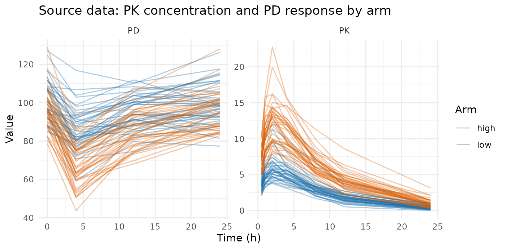
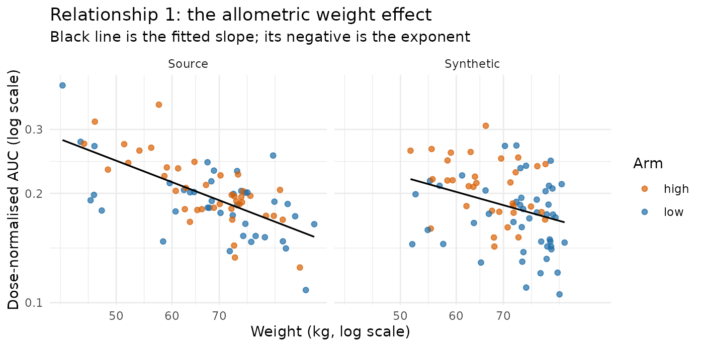
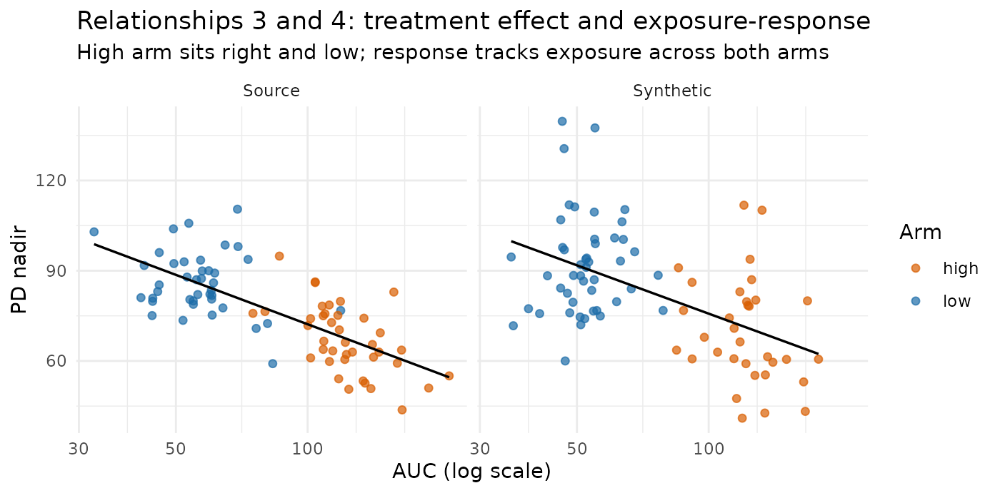
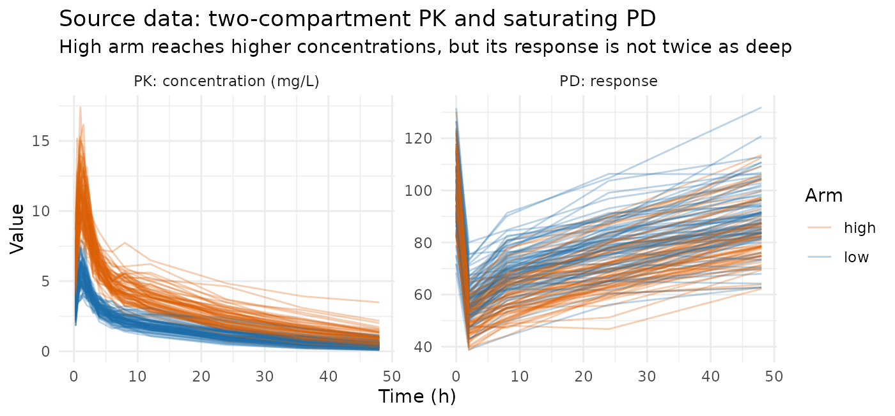
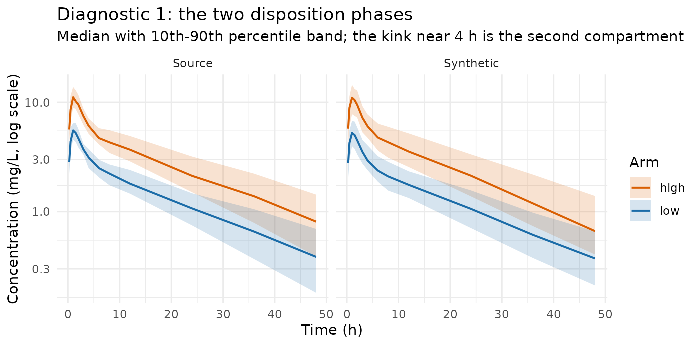
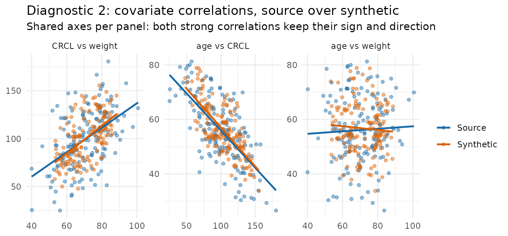
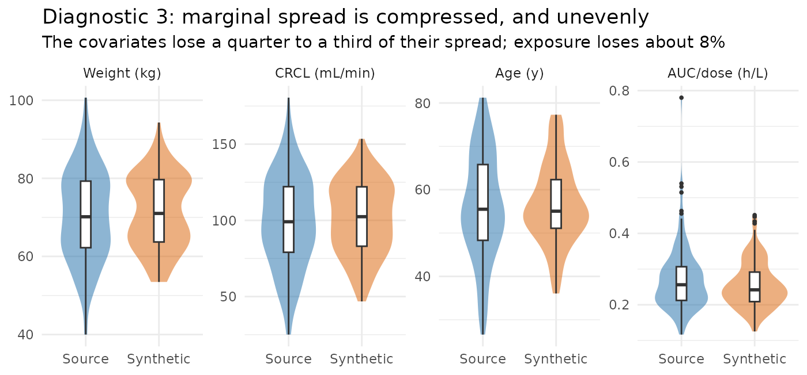
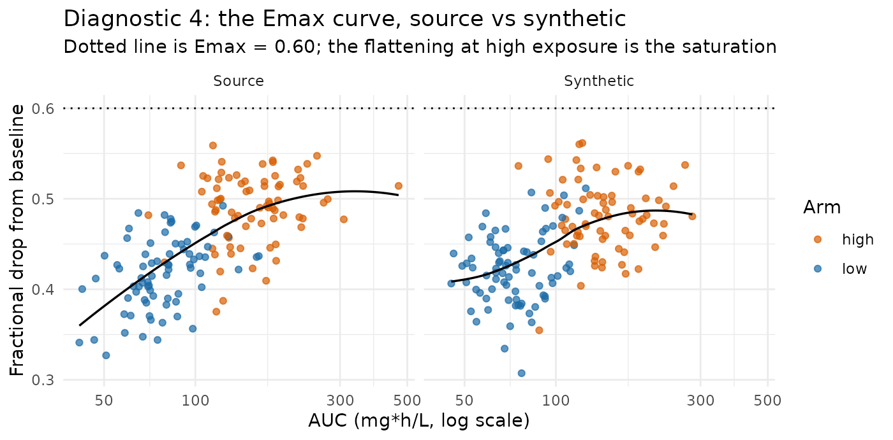

Example: are PK/PD, covariate, and treatment relationships preserved?
Source:vignettes/articles/example-avatar-PKPD-covariate-treatment-effect.Rmd
example-avatar-PKPD-covariate-treatment-effect.RmdThis article builds source datasets with relationships put in
deliberately — covariate effects, a dose effect, a treatment effect, and
an exposure–response link — runs synpmx_avatar() over them,
and measures how much of each one comes out the other side.
AVATAR does not explicitly model any of these relationships. There is no covariate model in it, no dose–response model, no pharmacokinetic/pharmacodynamic (PK/PD) link, and no notion of a treatment arm. Nothing in the generator knows that weight ought to affect clearance. Whatever survives does so as a side effect of how the method works; whole real subjects are blended together, and a subject carries all of its properties at once. So the right expectation is a tendency to keep relationships, but there is not a guarantee.
Two source datasets are used, in increasing order of difficulty.
- Example 1 is the small case: a one-compartment model, one covariate, four relationships. It establishes the measurement approach and shows the basic result.
- Example 2 is the harder case: a two-compartment model, three correlated covariates, a saturating exposure–response, and a richer set of diagnostics. Correlated covariates are where the interesting behaviour is, because blending acts on the joint distribution rather than on one column at a time.
The mechanism behind both results, and where it stops working, is discussed once at the end — it is the same mechanism in both examples.
Example 1: one compartment, one covariate
The model the source data comes from
Everything here is simulated, so the truth is known exactly and no real patient is involved. The four relationships being tested are the four places a covariate or a dose enters these equations — nothing else in the example puts a relationship in.
Pharmacokinetics. One-compartment oral, first-order absorption and elimination, for subject given dose :
Allometric scaling — relationship 1. This is the covariate effect, and the exponents are the numbers to remember:
with and on the log scale.
Dose — relationship 2. The low arm gets
and the high arm
.
The model is linear in dose, so exposure should scale exactly with
it.
Pharmacodynamics — relationships 3 and 4. A direct, linear inhibitory effect on a baseline:
The slope of is what creates both the treatment effect (the high arm reaches higher concentrations, so its response is driven further down) and the exposure–response link (whatever a subject’s exposure, response tracks it). There is no separate “treatment” term: the arm matters only through the dose it implies.
What that predicts, before any data is generated
Two of these have closed-form consequences worth writing down, because they are what the table later checks against:
Since the area under the concentration–time curve extrapolated to infinity satisfies , and ,
so regressing dose-normalised log AUC on log weight should recover a slope of — the allometric exponent itself, negative because a heavier subject clears faster and is therefore exposed less. And because the model is linear in dose, the high/low arm AUC ratio should be .
Those two numbers, and , are the ground truth. Everything below asks how much of them survives.
Generating the source dataset
Eighty subjects, forty per arm.
set.seed(2026)
make_subject <- function(id, arm, dose) {
wt <- rnorm(1, 70, 12)
# RELATIONSHIP 1 -- the covariate effect. The 0.75 and the 1.0 exponents are
# the only place weight ever influences anything.
cl <- 5 * (wt / 70)^0.75 * exp(rnorm(1, 0, 0.20))
v <- 40 * (wt / 70)^1.0 * exp(rnorm(1, 0, 0.15))
ka <- 1.2
pk_time <- c(0.5, 1, 2, 4, 8, 12, 24)
pd_time <- c(0, 4, 12, 24)
# RELATIONSHIP 2 -- `dose` enters here and nowhere else, so the arm affects
# exposure only through the dose it implies.
conc <- function(t) {
dose / v * ka / (ka - cl / v) * (exp(-cl / v * t) - exp(-ka * t))
}
e0 <- 100 * exp(rnorm(1, 0, 0.10))
rbind(
data.frame(ID = id, TIME = 0, DV = NA_real_, AMT = dose, EVID = 1L,
CMT = 1L, DVID = "PK", WT = wt, ARM = arm),
data.frame(ID = id, TIME = pk_time,
DV = conc(pk_time) * exp(rnorm(length(pk_time), 0, 0.08)),
AMT = 0, EVID = 0L, CMT = 2L, DVID = "PK", WT = wt, ARM = arm),
# RELATIONSHIPS 3 and 4 -- the `- 3 * conc(...)` term. It makes response
# track exposure, and therefore makes the high-dose arm respond more.
data.frame(ID = id, TIME = pd_time,
DV = (e0 - 3 * conc(pd_time)) *
exp(rnorm(length(pd_time), 0, 0.05)),
AMT = 0, EVID = 0L, CMT = 3L, DVID = "PD", WT = wt, ARM = arm)
)
}
source_data <- do.call(rbind, c(
lapply(1:40, make_subject, arm = "low", dose = 300),
lapply(41:80, make_subject, arm = "high", dose = 600)
))
source_data <- source_data[
order(source_data$ID, source_data$TIME, source_data$EVID == 0L), ]
rownames(source_data) <- NULL
roles <- pmx_roles(
id = "ID", time = "TIME", dv = "DV", amt = "AMT", evid = "EVID",
cmt = "CMT", dvid = "DVID",
covariates = "WT", # blended across donors into a new value
keep = "ARM" # copied verbatim from the one anchor subject
)Note the two different treatments of the two non-PK columns, because
it matters for what follows. WT is a
covariate: the synthetic subject gets a new weight
blended from its donors. ARM is kept: the
synthetic subject gets one real subject’s arm label, copied unchanged
from its anchor. Those are different subjects — the anchor supplies the
skeleton and the kept columns, the donors supply the values — which is
why the treatment effect surviving at all is not obvious in advance.
Measuring the four relationships
Each measurement is chosen so its answer can be compared against a number we already know from the equations above.
To recover the allometric exponent, log AUC must be regressed on log weight after dividing out the dose.
relationships <- function(d) {
obs <- d$EVID == 0 & !is.na(d$DV)
pk <- d[obs & d$DVID == "PK", ]
pd <- d[obs & d$DVID == "PD", ]
ids <- as.character(pk$ID)
auc <- tapply(seq_len(nrow(pk)), ids, function(i) { # AUC 0-24 h, trapezoid
t <- pk$TIME[i]; y <- pk$DV[i]; o <- order(t)
sum(diff(t[o]) * (head(y[o], -1) + tail(y[o], -1)) / 2)
})
wt <- tapply(pk$WT, ids, function(v) v[1])
arm <- tapply(as.character(pk$ARM), ids, function(v) v[1])
dose <- tapply(d$AMT[d$EVID == 1], as.character(d$ID[d$EVID == 1]),
function(v) v[1])[names(auc)]
nadir <- tapply(pd$DV, as.character(pd$ID), min)[names(auc)]
ok <- is.finite(auc) & auc > 0 & is.finite(wt) & is.finite(nadir)
c(# 1. allometric exponent on CL; truth = 0.75. Negated so it reads positive.
allometric = unname(-coef(lm(log(auc[ok] / dose[ok]) ~ log(wt[ok])))[2]),
# 2. dose effect; truth = 600/300 = 2 for linear PK.
dose_ratio = unname(mean(auc[ok & arm == "high"]) /
mean(auc[ok & arm == "low"])),
# 3. treatment effect: how much deeper the high arm's response goes.
pd_effect = unname(mean(nadir[ok & arm == "low"]) -
mean(nadir[ok & arm == "high"])),
# 4. exposure-response: response against the exposure that drove it.
er_slope = unname(coef(lm(nadir[ok] ~ log(auc[ok])))[2]))
}
truth <- relationships(source_data)
round(truth, 3)
#> allometric dose_ratio pd_effect er_slope
#> 0.747 2.151 18.747 -23.678The first two land where the equations said they would: an allometric exponent of about 0.75, and an arm ratio of about 2. That is the check that the source dataset really contains what we think it contains, before AVATAR is asked to preserve it.
What the source data looks like

The high arm reaches higher concentrations and its response is driven further down — relationships 2 and 3, visible directly.
Run AVATAR, several times
One synthetic dataset tells you little, because each run draws its own anchors and donors. Thirty runs show both the central tendency and the spread, and the spread is as much the point as the average.
set.seed(7)
replicates <- replicate(30, {
synthetic <- suppressWarnings(
synpmx_avatar(source_data, roles, seed = sample.int(1e6, 1))
)
relationships(synthetic)
})| relationship | source | synthetic | run_to_run_sd | retained |
|---|---|---|---|---|
| allometric exponent on CL (truth = 0.75) | 0.747 | 0.668 | 0.209 | 90% |
| dose effect: AUC ratio high/low (truth = 2.0) | 2.151 | 2.211 | 0.101 | 103% |
| treatment effect: PD nadir difference (low - high) | 18.747 | 18.833 | 3.883 | 100% |
| exposure-response: PD nadir per log AUC | -23.678 | -21.243 | 4.395 | 90% |
Every relationship survives, and all four land within roughly 10% of the source value. The two regression-based measures show mild dilution rather than distortion: the allometric exponent softens from 0.75 to about 0.68, and the exposure–response slope loses about a tenth of its steepness. Blending pulls each subject toward its neighbours, and a relationship measured across subjects flattens slightly as a result. The two ratio-based measures barely move at all. Example 2 shows that the dilution is not a law — the sign can go the other way.
The run_to_run_sd column is the honest part of the
table. The average over thirty runs sits close to the truth,
but a single synthetic dataset can land well off it — the allometric
exponent has a run-to-run SD of about 0.18 on a value of 0.68, so one
draw can easily read 0.5 or 0.9.
Seeing it, rather than reading it
The two relationships that are easiest to misjudge from a table are the covariate effect and the exposure–response link. Both are visible directly.

Heavier subjects sit lower on both panels — higher clearance, lower exposure — and the fitted line has a similar downward tilt in each. Note also that the two arms overlay one another once AUC is divided by dose, which is what dose proportionality looks like.

The treatment effect is the separation between the two colours, and the exposure–response link is the downward slope running through both. Both are present in the synthetic panel, with the cloud slightly tighter — that tightening is the blending, and it is why the fitted slope flattens a little.
Is the treatment arm coherent with the dose?
ARM is copied from the anchor and the concentrations are
blended from the donors, so nothing structurally prevents a “high” label
from arriving with “low” data. Check it directly.
one_run <- suppressWarnings(synpmx_avatar(source_data, roles, seed = 99))
table(ARM = one_run$ARM[one_run$EVID == 1], dose = one_run$AMT[one_run$EVID == 1])
#> dose
#> ARM 300 600
#> high 0 41
#> low 39 0Every synthetic subject’s arm label matches its dose — see the mechanism section for why that is not luck.
Example 2: two compartments, three correlated covariates
Example 1 is deliberately easy: one compartment, one covariate, effects that are large relative to between-subject variability. A colleague’s first question is what happens when the model looks more like a real one. This example raises every dimension at once:
| Example 1 | Example 2 | |
|---|---|---|
| Structure | one compartment, oral | two compartments, oral |
| Covariates | WT |
WT, CRCL, AGE
|
| Covariate distribution | independent | correlated (multivariate normal) |
| Covariates on clearance | 1 | 2, and they are collinear |
| Exposure–response | linear | saturating () |
| Subjects | 80 | 150 |
The two changes that actually matter are the last-but-one and the third. A two-compartment profile has a shape — a fast distribution phase and a slow terminal phase — that a one-compartment profile does not, so there is a structural feature that can be lost independently of any covariate effect. And correlated covariates mean the generator has to preserve a joint distribution, not three marginal ones, before any covariate effect can be measured correctly.
The model the source data comes from
Covariates. Three of them, drawn together from a multivariate normal on a latent scale so that they carry a correlation structure:
for — weight in kg, creatinine clearance (CRCL) in mL/min, and age in years. Heavier subjects filter more (+0.50), older subjects filter less (−0.60), and weight and age are close to independent (+0.10). That is a crude but recognisable rendering of a real covariate table, and the negative CRCL–age correlation is the one that causes trouble later.
Pharmacokinetics. Two-compartment with first-order oral absorption. Writing , , , the macro rate constants are the roots of , and
with , , . At typical parameter values that gives a distribution half-life of about 0.8 h and a terminal half-life of about 15 h — the two phases are well separated, so the biphasic shape is a real feature of the data and not a curiosity of the parameterisation.
Covariate effects. Two covariates act on clearance and one acts on the pharmacodynamic baseline:
with , , .
Pharmacodynamics. A direct but saturating inhibitory effect:
Saturation is the point. Because still holds, doubling the dose still doubles exposure exactly — but it does not double the response, because the high arm spends more of its time on the flat part of the curve. The response ratio between arms should therefore come out well below 2.
What that predicts, before any data is generated
Three consequences to check against later:
- Since , a regression of dose-normalised log AUC on both log weight and log CRCL should recover and .
- Leaving CRCL out of that regression should not recover . Weight and CRCL are correlated at 0.50, so the weight coefficient absorbs part of the CRCL effect and reads far too steep. This is ordinary confounding, and it is worth measuring precisely because it is a property of the joint covariate distribution — exactly the thing blending might damage.
- The high/low AUC ratio should be 2, and the high/low response ratio should be clearly less than 2.
Generating the source dataset
One hundred and fifty subjects, seventy-five per arm. Correlated covariates are drawn with a Cholesky factor, so no extra package is needed.
set.seed(303)
cov_corr <- matrix(c(
1.00, 0.50, 0.10,
0.50, 1.00, -0.60,
0.10, -0.60, 1.00), nrow = 3, byrow = TRUE)
chol_R <- chol(cov_corr)
# Three correlated covariates on a latent normal scale, then transformed to
# plausible clinical ranges and clipped so nothing extreme comes out.
draw_covariates <- function(n) {
z <- matrix(rnorm(3 * n), ncol = 3) %*% chol_R
data.frame(
WT = pmax(40, 70 + 12 * z[, 1]),
CRCL = pmax(20, 100 + 30 * z[, 2]),
AGE = pmin(85, pmax(20, 55 + 12 * z[, 3]))
)
}
# Two-compartment oral, in macro rate constants.
conc_2cmt <- function(t, dose, cl, vc, q, vp, ka) {
k10 <- cl / vc; k12 <- q / vc; k21 <- q / vp
s <- k10 + k12 + k21
alpha <- (s + sqrt(s^2 - 4 * k10 * k21)) / 2
beta <- (s - sqrt(s^2 - 4 * k10 * k21)) / 2
dose * ka / vc * (
(k21 - alpha) / ((ka - alpha) * (beta - alpha)) * exp(-alpha * t) +
(k21 - beta) / ((ka - beta) * (alpha - beta)) * exp(-beta * t) +
(k21 - ka) / ((alpha - ka) * (beta - ka)) * exp(-ka * t))
}
pk_time_2c <- c(0.25, 0.5, 1, 1.5, 2, 3, 4, 6, 8, 12, 24, 36, 48)
pd_time_2c <- c(0, 2, 8, 24, 48)
make_subject_2c <- function(id, arm, dose, cov) {
wt <- cov$WT; crcl <- cov$CRCL; age <- cov$AGE
# COVARIATE EFFECTS -- 0.75 on weight and 0.50 on CRCL, both on clearance.
cl <- 4 * (wt / 70)^0.75 * (crcl / 100)^0.50 * exp(rnorm(1, 0, 0.15))
vc <- 30 * (wt / 70)^1.00 * exp(rnorm(1, 0, 0.15))
q <- 15; vp <- 50; ka <- 1.5
cc <- function(t) conc_2cmt(t, dose, cl, vc, q, vp, ka)
# AGE acts only here, on the PD baseline -- a covariate on the other endpoint.
e0 <- 100 * (age / 55)^0.30 * exp(rnorm(1, 0, 0.10))
# SATURATING exposure-response: doubling exposure does not double effect.
eff <- function(t) e0 * (1 - 0.60 * cc(t) / (2 + cc(t)))
base <- data.frame(WT = wt, CRCL = crcl, AGE = age, ARM = arm)
rbind(
data.frame(ID = id, TIME = 0, DV = NA_real_, AMT = dose, EVID = 1L,
CMT = 1L, DVID = "PK", base),
data.frame(ID = id, TIME = pk_time_2c,
DV = cc(pk_time_2c) * exp(rnorm(length(pk_time_2c), 0, 0.08)),
AMT = 0, EVID = 0L, CMT = 2L, DVID = "PK", base),
data.frame(ID = id, TIME = pd_time_2c,
DV = eff(pd_time_2c) * exp(rnorm(length(pd_time_2c), 0, 0.05)),
AMT = 0, EVID = 0L, CMT = 3L, DVID = "PD", base)
)
}
n_arm <- 75
covs <- draw_covariates(2 * n_arm)
source_2c <- do.call(rbind, lapply(seq_len(2 * n_arm), function(i) {
make_subject_2c(i, if (i <= n_arm) "low" else "high",
if (i <= n_arm) 300 else 600, covs[i, ])
}))
source_2c <- source_2c[
order(source_2c$ID, source_2c$TIME, source_2c$EVID == 0L), ]
rownames(source_2c) <- NULL
roles_2c <- pmx_roles(
id = "ID", time = "TIME", dv = "DV", amt = "AMT", evid = "EVID",
cmt = "CMT", dvid = "DVID",
covariates = c("WT", "CRCL", "AGE"), # all three blended jointly
keep = "ARM"
)All three covariates are declared as covariates, so all
three are blended. Nothing in that declaration says they are correlated;
whether the correlation survives is one of the questions below.

The PD panel already shows the saturation: the high arm’s response trough is deeper than the low arm’s, but nowhere near twice as deep. The two disposition phases are hard to see on a linear scale, so they get their own log-scale diagnostic below.
Measuring what the complex model puts in
Two helpers. The first reduces a dataset to one row per subject; the second turns those rows into the numbers to compare. Exposure now uses a proper non-compartmental calculation — linear-up/log-down trapezoid, plus a terminal extrapolation from the fitted — because a plain trapezoid over a biphasic profile truncated at 48 h is biased, and the bias itself depends on weight.
# One row per subject: covariates, exposure, terminal half-life, PD baseline
# and nadir.
subjects_2c <- function(d) {
obs <- d$EVID == 0 & !is.na(d$DV)
pk <- d[obs & d$DVID == "PK", ]; pd <- d[obs & d$DVID == "PD", ]
ids <- as.character(pk$ID)
# Terminal slope from the 12 h and later points; the two-compartment shape is
# exactly what makes this different from the whole-profile slope.
lambda_z <- tapply(seq_len(nrow(pk)), ids, function(i) {
t <- pk$TIME[i]; y <- pk$DV[i]; late <- t >= 12 & y > 0
if (sum(late) < 3) return(NA_real_)
unname(-coef(lm(log(y[late]) ~ t[late]))[2])
})
auc <- tapply(seq_len(nrow(pk)), ids, function(i) {
t <- pk$TIME[i]; y <- pk$DV[i]; o <- order(t); t <- t[o]; y <- y[o]
a <- head(y, -1); b <- tail(y, -1); dt <- diff(t)
down <- b < a & b > 0 & a > 0 # linear up, log down
seg <- ifelse(down, dt * (a - b) / log(a / b), dt * (a + b) / 2)
lz <- lambda_z[[as.character(pk$ID[i][1])]]
sum(seg) + if (is.finite(lz) && lz > 0) tail(y, 1) / lz else 0
})
first <- function(v) tapply(v, ids, function(x) x[1])
n <- names(auc)
base <- tapply(pd$DV[pd$TIME == 0], as.character(pd$ID[pd$TIME == 0]),
function(v) v[1])
data.frame(
wt = as.numeric(first(pk$WT)[n]),
crcl = as.numeric(first(pk$CRCL)[n]),
age = as.numeric(first(pk$AGE)[n]),
arm = as.character(first(as.character(pk$ARM))[n]),
dose = as.numeric(tapply(d$AMT[d$EVID == 1],
as.character(d$ID[d$EVID == 1]),
function(v) v[1])[n]),
auc = as.numeric(auc[n]),
thalf = as.numeric(log(2) / unlist(lambda_z)[n]),
base = as.numeric(base[n]),
nadir = as.numeric(tapply(pd$DV, as.character(pd$ID), min)[n]),
stringsAsFactors = FALSE
)
}
relationships_2c <- function(d) {
s <- subjects_2c(d)
s <- s[is.finite(s$auc) & s$auc > 0 & is.finite(s$base) & s$base > 0 &
is.finite(s$thalf), ]
adj <- coef(lm(log(auc / dose) ~ log(wt) + log(crcl), data = s))
drop_hi <- mean(s$base[s$arm == "high"]) - mean(s$nadir[s$arm == "high"])
drop_lo <- mean(s$base[s$arm == "low"]) - mean(s$nadir[s$arm == "low"])
c(# structural: does the second compartment survive at all?
thalf = median(s$thalf),
# dose effect; truth = 2 because AUC = D/CL is still linear in dose.
dose_ratio = mean(s$auc[s$arm == "high"]) / mean(s$auc[s$arm == "low"]),
# covariate effects on CL, adjusted for each other; truth = 0.75 and 0.50.
wt_exponent = unname(-adj[2]),
crcl_exponent = unname(-adj[3]),
# the same weight effect NOT adjusted for CRCL -- confounded on purpose.
wt_unadjusted = unname(-coef(lm(log(auc / dose) ~ log(wt), data = s))[2]),
# covariate on the other endpoint; truth = 0.30.
age_on_base = unname(coef(lm(log(base) ~ log(age), data = s))[2]),
# saturation: below 2 because the Emax curve flattens.
resp_ratio = drop_hi / drop_lo,
# the joint covariate distribution: correlations and marginal spread.
cor_wt_crcl = cor(s$wt, s$crcl),
cor_crcl_age = cor(s$crcl, s$age),
cor_wt_age = cor(s$wt, s$age),
sd_log_wt = sd(log(s$wt)),
sd_log_crcl = sd(log(s$crcl)),
sd_log_auc = sd(log(s$auc / s$dose)))
}
truth_2c <- relationships_2c(source_2c)
round(truth_2c, 3)
#> thalf dose_ratio wt_exponent crcl_exponent wt_unadjusted
#> 15.973 2.026 0.759 0.456 1.233
#> age_on_base resp_ratio cor_wt_crcl cor_crcl_age cor_wt_age
#> 0.277 1.184 0.487 -0.682 0.044
#> sd_log_wt sd_log_crcl sd_log_auc
#> 0.172 0.357 0.296Everything lands where the equations said it would. The terminal
half-life is near 15 h, the dose ratio is 2, the adjusted exponents are
near 0.75 and 0.50, and the age exponent is near 0.30. The three sample
correlations (0.49, −0.68, 0.04) reproduce the intended 0.50, −0.60 and
0.10 to within ordinary sampling noise at
.
And wt_unadjusted reads about 1.2 rather than 0.75, which
is the confounding working exactly as predicted.
Run AVATAR, several times
set.seed(17)
replicates_2c <- replicate(30, {
synthetic <- suppressWarnings(
synpmx_avatar(source_2c, roles_2c, seed = sample.int(1e6, 1))
)
relationships_2c(synthetic)
})
# One fixed run, used for every plot below so the panels are all the same
# synthetic dataset.
one_2c <- suppressWarnings(synpmx_avatar(source_2c, roles_2c, seed = 5150))| feature | source | synthetic | run_to_run_sd | retained |
|---|---|---|---|---|
| terminal half-life, median (model = 15 h) | 15.973 | 15.848 | 0.340 | 99% |
| dose effect: AUC ratio high/low (model = 2.0) | 2.026 | 2.015 | 0.096 | 99% |
| weight exponent on CL, adjusted for CRCL (model = 0.75) | 0.759 | 0.888 | 0.172 | 117% |
| CRCL exponent on CL, adjusted for weight (model = 0.50) | 0.456 | 0.443 | 0.080 | 97% |
| weight exponent, NOT adjusted (confounded, model != 0.75) | 1.233 | 1.462 | 0.159 | 119% |
| age exponent on PD baseline (model = 0.30) | 0.277 | 0.416 | 0.081 | 150% |
| saturating response: high/low change from baseline (< 2) | 1.184 | 1.159 | 0.036 | 98% |
| quantity | source | synthetic | run_to_run_sd | change |
|---|---|---|---|---|
| correlation, weight vs CRCL (model = 0.50) | 0.487 | 0.620 | 0.050 | 0.132 |
| correlation, CRCL vs age (model = -0.60) | -0.682 | -0.700 | 0.033 | -0.018 |
| correlation, weight vs age (model = 0.10) | 0.044 | -0.089 | 0.082 | -0.133 |
| SD of log weight | 0.172 | 0.129 | 0.006 | -0.044 |
| SD of log CRCL | 0.357 | 0.273 | 0.017 | -0.084 |
| SD of log dose-normalised AUC | 0.296 | 0.276 | 0.017 | -0.020 |
Four things to read off these tables.
The structural and dose features come through essentially intact. The terminal half-life, the dose ratio, and the saturating response ratio are all within a couple of percent of the source, with small run-to-run spread. Nothing in AVATAR knows there are two compartments, and the second compartment survives anyway — because it is a property of each donor’s own trajectory, and a weighted average of biphasic curves is still biphasic.
The correlation structure broadly survives, but it is not reproduced exactly. Both signed, substantial correlations come back with the right sign and the right rough size, and the CRCL–age one is reproduced almost exactly (−0.68 against −0.68). The weight–CRCL correlation, though, is inflated from 0.49 to 0.62, and the near-zero weight–age correlation drifts from +0.04 to −0.09. Both of those shifts are large compared with the run-to-run spread, so they are systematic rather than noise. The lesson is that blending moves correlations by a modest but real amount, and does not move them all in the same direction.
The marginal spread is compressed, and unevenly. The standard deviation of log weight and log CRCL each shrink by about a quarter, and log age by nearer a third, while the spread of dose-normalised AUC shrinks by only about 8%. That asymmetry is what drives the next point.
Covariate slopes move, and not all in the same direction. A regression slope is . Where blending compressed the covariate axis harder than it compressed the exposure axis, the ratio goes up: the weight exponent reads 11% high, the unadjusted weight exponent 14% high, and the age exponent on baseline is inflated by nearly 60%. The CRCL exponent, in contrast, is essentially unchanged (−4%). So within a single dataset the four covariate slopes move by anywhere from −4% to +58%, and in example 1 the one covariate slope moved the other way entirely. That is the single most important thing on this page: the direction and size of the bias in a covariate effect are not a fixed property of the method. They depend on how much each axis was compressed, and that depends on the dataset.
Note also that wt_unadjusted stays wrong in the
synthetic data, wrong in the same direction, and wrong by a comparable
amount — 1.23 in the source against 1.40 in the synthetic, when the
model’s exponent is 0.75. The confounding is a real feature of the joint
distribution and it is reproduced rather than washed out, which is what
you want from a dataset used to develop the covariate-model code that
has to untangle it.
Diagnostics
Does the biphasic shape survive?
The structural question this example exists to ask. Median and 10th–90th percentile band at each nominal time, source against one synthetic run.

Both panels bend at the same place and settle onto a terminal slope of the same steepness. The synthetic band is a little narrower — the same compression the table reported — but the shape is the shape.
Does the joint covariate distribution survive?
Correlations first, since a covariate model built on synthetic data is built on these.

The tilt of each fitted line is the correlation, and both datasets share the axes in each panel so the two clouds are directly comparable. The two panels that carry a real correlation — CRCL against weight, and age against CRCL — keep their sign and their direction, with fitted lines that differ by less than a third. The third is the near-flat weight–age pair, where there is almost no correlation to reproduce and each fitted line is chasing noise; that panel is a caution, not a success. What is plain in all three is the tightening: the orange cloud sits inside the blue one.
That tightening is worth seeing on its own, because it is what bends the covariate slopes.

The covariate panels are noticeably narrower in the synthetic data
while the exposure panel is much less affected. Blended covariates are
an average of k donor values with a modest amount of noise
added back, whereas a blended concentration also carries the
residual-error structure that is re-applied on top. The two axes
therefore do not shrink together, and a slope measured between them
moves.
Note that the compression is symmetric rather than one-sided: the medians agree, and the synthetic data has no values outside the source range. That is the behaviour to want — nothing extreme is being invented — but it is also the reason a covariate effect estimated from synthetic data is not the source’s effect.
Does the saturating exposure–response survive?

Response rises with exposure and then bends over as it approaches the
ceiling, in both panels. The high arm sits to the right and higher, but
by much less than a factor of two — which is what the
resp_ratio row of the table reports numerically. A
synthetic dataset that had lost the saturation would show a straight
line here and a response ratio near 2.
Is the arm still coherent with the dose, and is anything dropped?
table(ARM = one_2c$ARM[one_2c$EVID == 1], dose = one_2c$AMT[one_2c$EVID == 1])
#> dose
#> ARM 300 600
#> high 0 72
#> low 78 0
c(source_subjects = length(unique(source_2c$ID)),
synthetic_subjects = length(unique(one_2c$ID)))
#> source_subjects synthetic_subjects
#> 150 150The arm labels are still perfectly aligned with the doses, and no
subject was dropped for want of donors — the default
on_donor_shortfall = "drop" never had to fire, because 75
subjects per arm is far above the k = 5 floor.
What example 2 adds
- Structure that lives inside a single subject’s trajectory — the second compartment, the terminal slope, the shape of the curve — comes through essentially unharmed, and needed no help from the three extra covariates or from anything in the role declaration.
- A joint covariate distribution comes through with its correlations broadly intact — right signs, roughly right sizes, with one of the three inflated by about a quarter — including the confounding that makes an unadjusted covariate analysis wrong.
- Marginal spread is compressed, and not by the same amount on every axis. That is what moves regression slopes, and it is why three of the four covariate exponents here come out too steep while example 1’s single exponent came out too shallow.
- So the honest summary is not “AVATAR mildly dilutes relationships”. It is “AVATAR compresses each axis by an amount that depends on the data, and a quantity defined as a ratio between two axes moves accordingly, in whichever direction that arithmetic takes it.”
Why the AVATAR algorithm preserves relationships
1. The event signature separates the arms. Donors
for blending are first sought among subjects with an identical event
signature, and that signature includes the dose amount. The 300
mg and 600 mg subjects therefore fall into different donor groups
automatically, and with 40 or more subjects per arm the floor of
k = 5 is met without ever borrowing across them. The arm
label copied from the anchor lands on concentrations blended from
same-arm donors. That is why both arm/dose tables above are perfectly
diagonal.
2. The profile distance separates them. Even where dose does not distinguish two arms, the donor search ranks candidates by distance in a profile space built from the covariates and the DV trajectory. A subject with higher concentrations sits near other subjects with higher concentrations. The effect you are trying to preserve is itself part of what selects the donors.
3. A subject is blended whole. Covariates, both endpoints, and the anchor’s kept columns all come from the same donor draw, so a synthetic subject’s weight, its CRCL, its exposure, and its response are all consistent with one another. This is why correlations between covariates largely survive in example 2, and why no special handling was needed to make three covariates work rather than one.
Where it weakens
The second mechanism above also says where this breaks down: it works because the effect is visible in the trajectory. An effect that is small relative to between-subject variability does not organise the donor neighbourhoods, donors get drawn from both groups, and the difference dilutes further than the mild flattening seen here.
Example 2 adds a second, quieter failure mode that has nothing to do with effect size: blending compresses every axis, and it does not compress them equally. Anything defined as a ratio between two compressed axes — a regression slope, a covariate exponent, a variance component — will move even when the relationship it describes is perfectly intact in shape.
That is the boundary to keep in mind. Everything measured on this page had a large, clean effect and a dose that separated the arms exactly.
What to take from this
- Relationships put into a source dataset come out of AVATAR at close to their original size — within about 10% in example 1, and within a few percent for the structural and dose features of example 2 — without anything in the method being told about them.
- Structural PK/PD features survive best: the number of compartments, the terminal slope, and the shape of a saturating exposure–response are carried inside individual trajectories, and blending trajectories preserves them.
- A joint covariate distribution largely survives, correlations included. Three correlated covariates needed no special handling, and the confounding they create is reproduced rather than washed out. Individual correlations do shift by up to about 0.13, systematically and in different directions, so check the ones your analysis depends on.
- Covariate slopes are the fragile quantity, and the bias has no fixed sign. Example 1’s allometric exponent came back about 8% too shallow. In example 2 the weight exponent came back 11% too steep, the CRCL exponent 4% too shallow, and the age exponent on baseline nearly 60% too steep. What determines the direction is which axis the blending compressed more.
- Expect compressed spread. Marginal covariate standard deviations shrank by a quarter to a third in example 2, while exposure shrank by 8%. Nothing extreme is invented, which is the point, but the synthetic cohort is less variable than the real one.
- All of this is a tendency, not a specification. It rests on donors being chosen by profile similarity and on covariates, endpoints, and the anchor’s kept columns being tied to the same donor draw. Nothing declares it, nothing enforces it, and no argument controls its strength.
- Nothing here indicates the parameters can accurately be estimated from synthetic data. These measurements say the structure survives well enough to develop and debug analysis code against. A parameter estimate from AVATAR output is an estimate from blended data, and this article does not make it trustworthy — example 2’s covariate exponents are the direct demonstration.
The numbers on this page come from two simulated sources with clean,
strong relationships and 80 and 150 subjects. They are an illustration
of the mechanism, not a general guarantee about your dataset. Run the
same measurement on your own source if the answer matters — the
relationships() and relationships_2c()
functions above are the whole method, and they take any data frame.